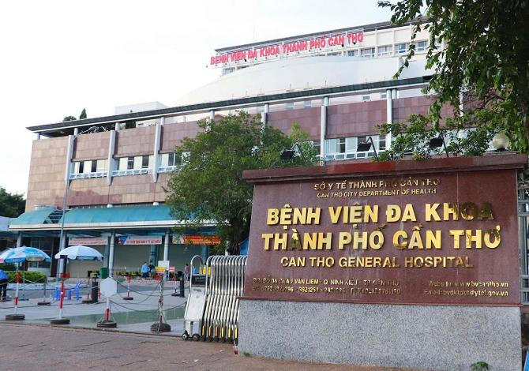
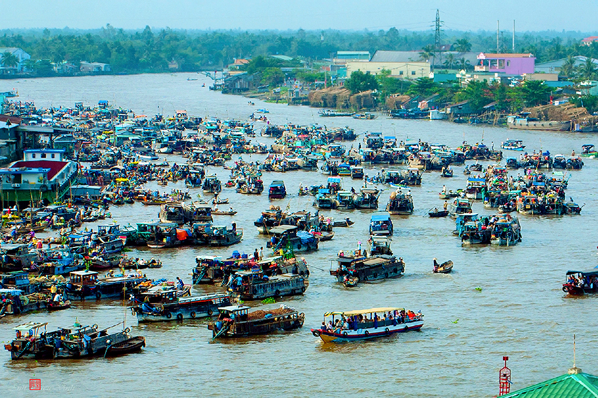

Thành phố Cần Thơ ngày nay
Cần Thơ là đô thị trung tâm của vùng Đồng bằng sông Cửu Long, giữ vai trò quan trọng trong phát triển kinh tế, thương mại, giáo dục và du lịch. Thành phố được mệnh danh là "Tây Đô" với hạ tầng hiện đại, đời sống văn hóa phong phú và cảnh quan sông nước đặc trưng miền Tây Nam Bộ.
Lịch sử hình thành
Cần Thơ là vùng đất có lịch sử hình thành và phát triển lâu đời. Từ thế kỷ XVII, cư dân người Việt bắt đầu đến khai hoang, lập làng trên vùng đất trù phú ven sông Hậu. Trong quá trình mở rộng lãnh thổ về phương Nam, vùng đất Cần Thơ đóng vai trò quan trọng trong phát triển kinh tế nông nghiệp và giao thương đường thủy của khu vực Nam Bộ.
Trải qua nhiều giai đoạn lịch sử, Cần Thơ từng là trung tâm hành chính quan trọng của miền Tây Nam Bộ. Năm 2004, Cần Thơ chính thức trở thành thành phố trực thuộc Trung ương, mở ra giai đoạn phát triển mạnh mẽ về kinh tế và hạ tầng.
Ngày nay, Cần Thơ được xem là đầu tàu kinh tế của vùng Đồng bằng sông Cửu Long và là điểm đến du lịch nổi tiếng trong và ngoài nước.
Dân số
Thành phố Cần Thơ hiện có dân số hơn 4,1 triệu người. Thành phần dân cư gồm người Kinh, Khmer, Hoa và nhiều dân tộc khác.
Nguồn lao động trẻ, năng động cùng trình độ dân trí ngày càng được nâng cao là yếu tố thúc đẩy sự phát triển của thành phố.
Thông tin chung về Thành phố Cần Thơ (Sau khi sáp nhập)
| Tiêu chí | Thông tin |
|---|---|
| Tên chính thức | Thành phố Cần Thơ |
| Biệt danh | Tây Đô |
| Diện tích | Khoảng 6.360,83 km² |
| Dân số | Hơn 4,1 triệu người |
| Đơn vị hành chính | Sắp xếp, tinh gọn toàn diện các cấp quận/huyện và xã/phường |
| Sông chính | Sông Hậu và hệ thống sông ngòi, kênh rạch toàn vùng |
| Thế mạnh | Giáo dục, y tế chất lượng cao, kinh tế biển, nông nghiệp công nghệ cao, thương mại, logistics và du lịch sinh thái - văn hóa |
Giáo dục và Đào tạo
Là trung tâm giáo dục hàng đầu miền Tây, nơi đây tập trung các trường đại học và cao đẳng lớn, cung cấp nguồn nhân lực chất lượng cao:
- Đại học Cần Thơ: Trung tâm đào tạo đa ngành lớn nhất vùng ĐBSCL.
- Đại học Y Dược Cần Thơ: Nôi đào tạo nhân lực y tế trọng điểm phía Nam.
- Đại học Kỹ thuật - Công nghệ Cần Thơ: Chuyên đào tạo kỹ sư công nghệ hiện đại.
Hệ Cao đẳng & Dạy nghề
Nhiều trường cao đẳng uy tín cung cấp đào tạo tay nghề thực tiễn như Cao đẳng Cần Thơ, Cao đẳng nghề thành phố Cần Thơ,... đáp ứng nhu cầu phát triển kinh tế địa phương.
Khí hậu
Cần Thơ có khí hậu nhiệt đới gió mùa, nhiệt độ trung bình từ 26 - 28°C quanh năm.
- Mùa mưa: Tháng 5 đến tháng 11.
- Mùa khô: Tháng 12 đến tháng 4 năm sau.
Điều kiện thời tiết thuận lợi giúp phát triển nông nghiệp, du lịch sinh thái và các hoạt động tham quan quanh năm.
Con người
Người dân Cần Thơ nổi tiếng với tính cách thân thiện, hiếu khách, chân thành và nghĩa tình.
Đây là nét đẹp đặc trưng giúp Cần Thơ trở thành điểm đến được yêu thích trong lòng du khách.
🏥 Hệ thống Y tế Thành phố Cần Thơ - Trung tâm Y tế Vùng ĐBSCL

Thành phố Cần Thơ được Chính phủ định hướng trở thành trung tâm y tế chuyên sâu của vùng Đồng bằng sông Cửu Long. Hệ thống y tế tại đây không ngừng được đầu tư mạnh mẽ về cơ sở hạ tầng, trang thiết bị y khoa hiện đại và đội ngũ y bác sĩ trình độ cao, đáp ứng nhu cầu khám chữa bệnh chất lượng cao cho hơn 20 triệu người dân trong khu vực.
Các Bệnh viện Tuyến Trung ương và Đa khoa Trọng điểm:
- Bệnh viện Đa khoa Trung ương Cần Thơ: Bệnh viện hạng I trực thuộc Bộ Y tế, đi đầu trong các kỹ thuật y khoa chuyên sâu như can thiệp tim mạch, phẫu thuật thần kinh, ngoại tổng quát và hồi sức cấp cứu.
- Bệnh viện Đại học Y Dược Cần Thơ: Mô hình kết hợp giữa đào tạo y khoa và điều trị chất lượng cao, quy tụ đội ngũ giáo sư, tiến sĩ, bác sĩ đầu ngành với nhiều chuyên khoa sâu.
- Bệnh viện Nhi Đồng Thành phố Cần Thơ: Trung tâm nhi khoa hiện đại với quy mô lớn, chuyên điều trị chuyên sâu các bệnh lý nhi khoa và sơ sinh cho toàn khu vực miền Tây.
- Bệnh viện Phụ Sản Thành phố Cần Thơ: Đơn vị chuyên khoa đầu ngành về sản - phụ khoa và hỗ trợ sinh sản (hiếm muộn), ứng dụng nhiều công nghệ tiên tiến.
- Bệnh viện Đa khoa Thành phố Cần Thơ: Bệnh viện đa khoa hạng I của thành phố với cơ sở vật chất khang trang, đáp ứng tốt nhu cầu khám chữa bệnh bảo hiểm y tế và chăm sóc sức khỏe cộng đồng.
Nhờ hệ thống y tế phát triển toàn diện, Cần Thơ đã giúp giảm tải đáng kể cho các bệnh viện tuyến trên tại TP. Hồ Chí Minh, đồng thời khẳng định vị thế là đô thị hạt nhân của miền Tây Nam Bộ.
Hình ảnh nổi bật

